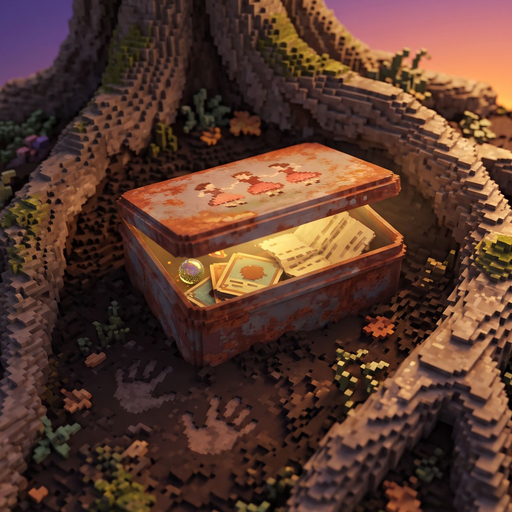

| Project Title: | TWENTESIXTEN |
| Game Type: | ☐ 2D ☒ 3D (2.5D: 2D pixel-art sprites shown in a 3D voxel neighborhood) |
| Game Genre: | Story-driven exploration / narrative adventure with memory mini-games |
| Developer(s): | Fhiej Dale Placer, Aira Jane Montero, Jomar Ceballos |
| Course / Subject: | [fill in course / subject] |
| Instructor: | [fill in instructor's name] |
| Date Submitted: | [fill in date] |
Purpose of this document: This document records the concept, design, development, implementation, testing, and final output of TWENTESIXTEN, following the Game Development Project Documentation Template. Everything described here is taken from the game's actual source code (repository fhiejdaleplacer14-droid/fhiejdaleplacer14-droid-TWENTESIXTEN-V2, version 2.0.0). Items highlighted like this are details only the team can supply and must be filled in before submission.
What to include: Explain why the group decided to develop the game. Describe the idea, purpose, inspiration, and intended experience.
Many Filipinos who grew up in the province remember the same childhood: buying ice candy at the sari-sari store with coins from a biscuit tin, playing basketball on the barangay court until the streetlights came on, flag ceremonies, simbang gabi, pisonet computer shops, and a Lola calling everyone home "before dark." The group wanted to make a game about that time, and about the feeling of going back to it as a grown-up.
The idea behind TWENTESIXTEN is a simple wish that every child has: to grow up fast. The game shows how that wish looks from the other side. The player returns to Lola's neighborhood (Purok 3) as an adult. Walking around and talking to the neighbors brings back childhood memories, and each memory is played as a small mini-game. The memories slowly lead the player to a tin box buried under an old tree, and to the real reason everyone in the neighborhood is busy preparing chairs, food, and coffee for the evening.
The intended experience is quiet, warm, and emotional. The game has no enemies, no timer for the whole game, and no game-over screen. The emotional impact comes from the dialogue, the environment, the changing afternoon light, the folk-song music, the small discoveries, and the final reveal. Its closing lines sum up the purpose: "We spent our whole childhood in a hurry to grow up. It was the dumbest thing we ever wished for."
What to include: Provide a short description of the game, including its title, genre, 2D/3D type, main gameplay, number of players, and target platform.
| Item | Description |
|---|---|
| Title | TWENTESIXTEN (the year 2016, spelled the way a child would write it; the buried letter is signed "me, twentesixten") |
| Genre | Story-driven exploration / narrative adventure with ten memory mini-games |
| Type | 3D presentation (2.5D): 2D pixel-art characters drawn as camera-facing sprites inside a 3D voxel neighborhood with real-time lighting and shadows |
| Main gameplay | Walk around a Filipino provincial barangay, talk to neighbors, run errands, relive childhood memories as mini-games, find Lola's tin box, and reach the ending |
| Players | Single player |
| Platform | Web browser (desktop, laptop, phone, tablet). Installable as a Progressive Web App and playable offline after the first visit |
| Languages | English, Tagalog, and Bisaya (Cebuano), selectable in-game |
| Play time | About 15 to 20 minutes for one full playthrough (design target) |
What to include: Explain the game in 1–2 paragraphs as if introducing it to someone who has never played it.
You come home to your Lola's house in a small Filipino barangay for a short visit. It is a sunny afternoon. Lola is outside and asks you to buy vinegar from Ate Cora's sari-sari store, then asks you to look for her old biscuit tin with the dancing ladies on the lid. As you walk around asking the neighbors about it, familiar places bring memories back: the store, the basketball court, the school flagpole, the chapel, the market, the bakery, the plaza fountain, the pisonet, the creek, and Lola's bench. Each memory turns the screen golden, shows the kids you used to play with, and lets you play a short mini-game as your younger self.
Meanwhile the neighbors keep giving you small errands: glue and nails for Mang Tonyo, a message about chairs for Ma'am Linda, a list for Ate Mila's carinderia, bread from Kuya Berto's panaderia. The afternoon turns golden, then to sunset, then to dusk. When you finally dig up the tin box under the old tree and bring it home, you understand why the whole street has been borrowing chairs and making coffee. The game ends quietly on Lola's bench.
What to include: Identify the genre, such as action, adventure, platformer, racing, puzzle, RPG, strategy, simulation, horror, sports, or educational.
Primary genre: Adventure (story-driven exploration / narrative adventure). The player explores a single connected neighborhood, talks to characters, follows objectives, and uncovers a story. It is close to games often called "walking simulators" or "cozy narrative" games, but with more interaction.
Secondary elements: short arcade / timing mini-games (catching, timing, rhythm, dodging, stealth, hide-and-seek), light simulation (neighbors with their own needs and daily routines, traffic, physics objects), and one dialogue-choice scene.
What to include: Describe the intended age group, users, skill level, and number of players.
What to include: State the main objective of the game project.
To develop a complete, playable, story-driven 3D web game, set in a Filipino provincial neighborhood around 2016, that lets the player explore, interact with neighbors, and relive childhood memories, and that delivers a meaningful emotional ending about Lola and the wish to grow up too fast. The game should be finishable in about 15 to 20 minutes.
What to include: List 3–5 measurable objectives, such as implementing player controls, enemies, scoring, levels, and interactive environments.
What to include: Describe the setting, main character, conflict, goal, major events, and ending.
Setting. Purok 3, a small Filipino provincial barangay. Two streets are joined by three alleys. Along them are Lola's house, Mang Tonyo's vulcanizing shop, the basketball court, Ate Cora's sari-sari store, a pisonet, Aling Nena's house, a carinderia, and a panaderia. North of the upper street are the elementary school, the plaza fountain, an empty lot with an old tree, the chapel, and the palengke (market). A dirt path leads south to the creek. The story takes place over one afternoon, from bright day to golden hour, sunset, and dusk.
Main character. The player (Lola's apo, or grandchild). They grew up in this neighborhood and now live in the city ("Manila"), and have come home only "until Sunday." The player is never named. In memories, they appear as their child self.
Conflict. The real conflict is internal. As a child, the player always wanted to be "big" and spent the whole childhood wishing time would go faster. Now grown up, they have drifted away from home and from Lola. Underneath the day's errands, something is clearly wrong: the neighbors act strangely, Cora refuses payment for the vinegar, and everyone is preparing chairs and food "for tonight."
Goal. Find Lola's lost tin box by asking around the neighborhood and following the memories it brings back.
Major events.
Ending. Inside, Lola looks like she is resting her eyes after lunch. Taped inside the tin's lid is a second letter in Lola's handwriting: she found the buried letter as well, read it, put it back, and asks only, "Just come home once in a while. Even if it's not before dark." The player sits on the worn bench outside. For a moment Lola appears faintly beside them and whispers, "Have you eaten?", then fades. The closing lines appear, the title comes up, and the credits roll over the team's own footage of kites at dusk. The afternoon with Lola, the dream-like memories, and the bench all come together into the final realization: the player cannot go back to the past they were in such a hurry to leave.
What to include: Document each important character and explain the character's role.
| Character | Where | Role in the game |
|---|---|---|
| The player (apo) | Everywhere | Main character. A grown-up grandchild visiting home. Appears as a child in memories. |
| Lola | Outside her house; bench | The heart of the story. Gives the first quest (vinegar) and the main quest (the tin box). Appears in the chapel, market, and bench memories, and in the ending. |
| Ate Cora | Sari-sari store | Store owner. Gives the vinegar for free, starts the store memory, gives the player the photograph, and starts the errand chain. |
| Mang Tonyo | His vulcanizing shop | Neighbor fixing chairs "for tonight." Remembers the court; sends the player to Ma'am Linda. Says "Our condolences, anak" at the wake. |
| Ma'am Linda | Elementary school | The player's old Grade 4 teacher. Lends the school's chairs and sends a list to Mila. |
| Ate Mila | Carinderia | Cook. Takes the food list for the night and sends the player to Berto. |
| Kuya Berto | Panaderia | Baker. Lola was his customer (suki) for thirty years; he will bring the bread himself. Last step of the errand chain. |
| Aling Rosa, Mang Karding | Market | Vendors who remember the time the player got lost in the market. |
| Manong (vendor) | Fishball cart | Street food vendor; describes how the street has gone quiet. |
| The kid on the court | Basketball court | A boy who plays alone now. Shows how the neighborhood has changed. |
| Neighbors (9) | Walk around freely | Aling Nena, Kuya Jun (now owns the pisonet), Ate Liza, Mang Ben, Tita Baby, Manong Rudy, Lolo Ising, Bong, and Jenjen (a child). Each has their own needs, routine, and lines. They make the barangay feel alive and add small story details. |
| The old gang | Memories only | Three childhood friends who appear as see-through "ghost" kids during memories. |
| Animals | Street, empty lot | A street dog (chases chickens and the ball), Mang Tonyo's cat, chickens, butterflies, and birds. |
What to include: List and explain the major implemented features.
What to include: Use a table to identify each feature and its purpose.
| Feature | Description / Purpose |
|---|---|
| 3D voxel world + pixel sprites | Gives a warm, toy-like, nostalgic look while keeping the pixel-art characters. |
| Day-to-dusk lighting | Shows time running out and builds the mood toward the ending. |
| Story flags, objectives, errands | Guides the player and controls what each NPC says at each point in the story. |
| 10 memory mini-games | Turns each memory into something the player does, not only reads. |
| Needs-based neighbors (NPC AI) | Makes the barangay feel lived-in rather than empty. |
| Traffic and physics objects | Adds humor, life, and things to play with between story beats. |
| Photograph and letter | Story items that hold clues and the emotional reveal. |
| English / Tagalog / Bisaya | Lets Filipino players enjoy the story in their own language. |
| Synthesized folk music and sound | Filipino atmosphere with no audio files or licensing issues. |
| Auto-save and Continue | A closed browser tab does not lose progress. |
| Keyboard, gamepad, touch; PWA | Playable on computers and phones, online or offline. |
| Settings menu | Volume, text speed, visual effects level, language, fullscreen. |
What to include: Document keyboard, mouse, controller, touchscreen, or other controls.
| Action | Keyboard | Gamepad | Touchscreen |
|---|---|---|---|
| Walk | WASD or arrow keys | Left stick or D-pad (analog: slower when half pushed) | Drag anywhere on the left half (a thumbstick appears) |
| Run (knocks things over) | Hold Shift | RB / RT | Not available (the stick walks at analog speed) |
| Talk, look, continue dialogue, mini-game action | E or Space | A (or B) | E button on the right |
| Look at the photograph | Q | X | Photo button |
| Read the letter | R | Y | Letter button |
| Menu: move / change / select / back | ↑ ↓ / ← → / Enter / Esc | D-pad / A / B | Tap; mouse click also works |
| Skip end credits | Space or E | A | Tap |
Mini-games use the same controls: the walk keys (or stick) to move left/right or steer, and E (or Space / A / tap) as the single action button.
What to include: Explain the rules, objectives, winning conditions, losing conditions, and player limitations.
What to include: Explain how points, lives, health, rewards, penalties, or other game statistics are calculated.
TWENTESIXTEN does not use a points score or a health bar, because the goal is the story rather than a high score. Progress and results are tracked as follows:
| Mini-game (memory) | Win rule | Lose rule |
|---|---|---|
| Coin Scramble (store) | Pick up all 10 rolling coins within 14 seconds | Time runs out |
| Free Throws (court) | Make 2 of 3 shots by pressing E when the marker is in the gold zone (zone shrinks, marker speeds up) | 2 misses |
| Flag Song (school) | Sing at least 12 notes in time; presses off the beat count against you | Fewer than 12 by the end of the song |
| Stay Awake (chapel) | Keep your eyes open for 22 seconds by tapping E | Eyes fully close |
| Lost in the Market | Find Lola in the crowd within 35 seconds (E shouts and she answers) | Time runs out; she finds you |
| Hot Pandesal (bakery) | Catch 10 of 16 falling pandesal in the bag | All 16 drop with fewer than 10 caught |
| Wishing Coins (fountain) | Land 2 of 3 coins in the basin (aim side to side, then distance) | 2 coins miss |
| Pisonet | Dodge falling blocks for 4 "pesos" (4 × 5 seconds) with 3 lives | All 3 lives lost |
| Creek Sneak (creek) | Reach the deep water without Aling Ising seeing you; hide behind bushes or the bench | Seen 3 times |
| Bench Talk (Lola's bench) | No win/lose: choose one of 3 things to say to Lola; the choice is saved as a flag | None |
| Action / Rule | Control or Description |
|---|---|
| Interact | E / Space / gamepad A / touch E, within reach of a target |
| Find a memory | Interact with an old place after Lola's tin-box request; +1 to "memories n / 10" |
| Get hit by traffic | Player is thrown, lies dazed about 1.4 s, then walks back to the sidewalk; hit counter +1 |
| Run | Shift: 200 px/s instead of 120 px/s; pushes and knocks over loose objects |
What to include: Provide a flowchart showing the sequence from the main menu through gameplay, game over, and victory.
What to include: For each level, document its name, objective, environment, enemies, obstacles, items, difficulty, and winning condition.
TWENTESIXTEN has one continuous level (the neighborhood), divided into four story chapters marked by the time of day, plus ten memory mini-games that work as short sub-levels. There are no enemies; obstacles are traffic, solid buildings, and the challenge of each mini-game.
| Chapter | Objective | Environment | Obstacles / items | Winning condition |
|---|---|---|---|---|
| 1. Afternoon: Homecoming | Talk to Lola, buy vinegar, bring it home | Bright afternoon; radio playing folk songs at the store | Traffic. Item: vinegar (story) | Lola asks for the tin box |
| 2. Afternoon: The Tin Box | Ask around; relive memories; finish errands | Whole barangay opens up: school, plaza, market, chapel, creek | Traffic, mini-games. Items: photograph, glue and nails, list | Store, court, school memories + errands + 6 memories |
| 3. Golden hour: The Tree | Find the tree past the plaza | Golden light, Dandansoy on guitar | Item: tin box + letter | Dig up the tin |
| 4. Sunset to dusk: Home | Bring the tin home, go inside | Shops close, street lamps on, wake set up at Lola's | None | Enter Lola's door → ending |
| Memory sub-level | Location | Objective / mechanic | Obstacles | Difficulty |
|---|---|---|---|---|
| Coin Scramble | Sari-sari store | Collect 10 coins rolling away along the sidewalk (14 s) | Coins scatter; time | Easy |
| Free Throws | Court | Timing meter; 2 of 3 shots | Gold zone shrinks, marker speeds up | Medium |
| Flag Song | School flagpole | Rhythm game: press E on the beat; 12 notes | Timing window ±0.16 s; wrong presses | Medium |
| Stay Awake | Chapel (simbang gabi) | Tap to keep eyes open for 22 s | Eyelids close faster over time, in waves | Easy–Medium |
| Lost in the Market | Palengke | Find Lola (lavender clothes, white hair) in a crowd in 35 s | Crowd of 14 adults | Medium |
| Hot Pandesal | Panaderia | Move a bag to catch 10 of 16 falling breads | Breads fall in 1.5 s | Easy |
| Wishing Coins | Plaza fountain | Two-step aim (direction, then distance); 2 of 3 coins | Small basin | Medium |
| Pisonet | Pisonet shop | Arcade dodge game, 4 × 5 s, 3 lives | Falling blocks | Medium |
| Creek Sneak | Creek | Stealth: reach the deep water unseen; 3 chances | Aling Ising's view cone (8 tiles) | Medium–Hard |
| Bench Talk | Lola's bench | Dialogue choice (3 options) | None | None |
What to include: Describe maps, stages, worlds, backgrounds, lighting, terrain, and other environmental elements.
Map. One map of 92 × 50 tiles (each tile is 32 game pixels). It has two east–west streets (each with sidewalks and a 4-tile road), three connecting alleys, and a dirt path down to the creek.
What to include: Insert a screenshot or design and explain its functions.
The main menu shows the title "TWENTESIXTEN" in a serif font over a darkened 3D view of the street at sunset. The menu items fade in one by one on the left:
On the very first visit, the game asks for a language before anything else ("Language · Wika · Pinulongan"), suggesting one based on the browser language. The menu works with keyboard, mouse, gamepad, and touch. A hint line at the bottom shows the controls for the current panel.
What to include: Document health, score, timer, inventory, controls, minimap, or other interface elements.
What to include: Document settings, pause, game over, victory, character selection, inventory, or other screens.
| Screen | Description |
|---|---|
| Language selection | Shown on first launch: English, Tagalog, Bisaya. |
| Settings | Volume, text speed, effects quality, language (the whole menu and the street signs rebuild in the new language), fullscreen. Saved between visits. |
| Controls / Credits panels | Side panels in the main menu. |
| Photograph view | Full-screen photo of four kids in front of the store. After the player finds the letter, the description mentions the long shadow of the photographer "wearing a duster" (Lola). |
| Letter view | The child's letter to their future self (R), and Lola's letter in the ending. |
| Memory cinematic | Golden flash, camera zoom, see-through childhood friends, then the mini-game. |
| Ending (victory) and end credits | Bench scene, whispered lines, the title, then film-style credits over kite footage with cast portraits and team stickers. Shows "Times run over: n". Ends with "Thank you for playing." and returns to the menu. |
| Pause / Game over / Character selection | Not included. The game saves automatically and has no failure state, so a pause or game-over screen was not needed. The main character is fixed by the story. |
What to include: List the game engine, programming language, IDE/code editor, modeling tools, image/audio tools, version control, and other technologies actually used.
| Category | Tool / Technology (version) |
|---|---|
| Game framework | Phaser 4 (4.2.1): game loop, scenes, input (keyboard, gamepad, touch), Arcade Physics, sprites and animations, tweens, UI text |
| 3D rendering | Three.js (0.186.1): the 3D voxel neighborhood, lights, shadows, fog, bloom/glow |
| Programming language | JavaScript (ES modules), HTML5, CSS |
| Build tool / dev server | Vite (8.3.4) |
| Runtime / package manager | Node.js and npm |
| Audio | Web Audio API (all music and sound effects are synthesized in code) |
| 3D models | Made in code (a custom voxel builder, src/stage/voxel.js); no external modeling tool |
| Font | Pixelify Sans via the @fontsource/pixelify-sans npm package (5.3.0) |
| Offline / install | Service Worker and Web App Manifest (Progressive Web App) |
| Storage | Browser localStorage (save game and settings) |
| Version control | Git and GitHub |
| Code editor / IDE | [team: fill in, e.g., Visual Studio Code] |
| Image / video tools | [team: fill in the tool used to crop the team stickers and shrink the kite video] |
| Other tools (e.g., AI assistants) | [team: list any AI coding or writing assistants used, if your instructor requires it] |
What to include: Describe the development setup and versions where relevant.
These requirements come from what the game uses (WebGL 3D, Web Audio, ES modules). The team has not measured exact minimum specifications on low-end hardware; the values below are recommendations. The game lowers its own effects quality automatically when it runs slowly.
What to include: Specify minimum processor, RAM, storage, graphics, display, controller, or other hardware requirements.
| Component | Minimum (recommended) |
|---|---|
| Processor | Dual-core CPU from the last several years (quad-core recommended) |
| RAM | 4 GB (8 GB recommended) |
| Storage | About 5 MB of game files (engine code, sprite sheets, ending video, icons), cached by the browser; no installation needed |
| Graphics | Any GPU with WebGL support (integrated graphics work; use "Low" or "Medium" effects on weaker devices; phones start on Medium automatically) |
| Display | Any size; the game scales a 960 × 540 (16:9) view to fit the window. Landscape orientation on phones |
| Input | Keyboard, or a standard gamepad (Xbox-style layout), or a touchscreen |
| Audio | Speakers or headphones (recommended for the music) |
| Internet | Needed for the first load only; the game then works offline |
What to include: Specify operating system, runtime, drivers, engine/runtime dependencies, and other software requirements.
What to include: Show how the game files, scenes/levels, scripts, assets, UI, audio, and managers are organized.
TWENTESIXTEN-V2/
├── index.html page shell: 3D canvas, game layer, ending film, credits roll
├── vite.config.js build settings
├── package.json
├── CREDITS.md third-party asset credits
├── public/
│ ├── assets/images/ Kenney sprite sheets (city tiles, characters)
│ ├── assets/ending/ kites.mp4 + team stickers
│ ├── icons/ app icons (PWA)
│ ├── music/ optional local music (not committed)
│ ├── manifest.webmanifest, sw.js install + offline support
└── src/
├── main.js starts the 3D stage and the Phaser game
├── scenes/ Boot, Backdrop, Title, Neighborhood, UI, Credits
├── systems/ Story, Memory, Dialogue, Daylight, Save, Settings,
│ Lang, Music, Sound, TouchPad, Fonts
├── world/ neighborhood.js (map), World.js (building it),
│ Life.js (NPC AI, animals), Traffic.js, Toys.js (physics props)
├── memories/ MiniGame.js base + 10 mini-games
├── stage/ 3D renderer: Stage, Mirror, look (lighting), build,
│ models (voxel props), voxel, paint (textures), settle (optimizer)
├── art/ cast.js (recoloured characters), drawn.js, tiles.js
└── data/ story.json, memories.json, residents.json, songs.json,
lang/en.json, lang/tl.json, lang/ceb.json
| Scene | Responsibility |
|---|---|
| BootScene | Loads sprite sheets; builds recolored characters, portraits, and animations |
| BackdropScene | The slowly drifting street behind the menu |
| TitleScene | Main menu, language choice, controls, settings, credits |
| NeighborhoodScene | Main gameplay: player, input, interaction, traffic hits, story zones, saving, ending |
| UIScene | Everything over the world: HUD, dialogue, photo/letter, cinematic bars, whispers, touch pad |
| CreditsScene | Film-style end credits over the kite video |
What to include: Include a suitable diagram such as a system architecture diagram, class diagram, or component diagram if applicable.
How it fits together. The game logic runs in Phaser using the 2D map's pixel coordinates (32 pixels per tile). Phaser's own camera for the gameplay scene is hidden. After every game step, the Three.js Stage draws the town in 3D, and the Mirror copies each Phaser sprite, shadow, ball, particle, and text label into a matching 3D object (a camera-facing pixel sprite, a voxel model, or a label). This let the team write gameplay as a simple top-down 2D game while players see a lit 3D world.
What to include: Explain movement, jumping, attack, health, animation, collision, and related implementation.
// src/scenes/NeighborhoodScene.js (excerpt) const WALK = 120; const RUN = 200; // with Shift: fast enough to knock things over ... if (left) body.setVelocityX(-pace); else if (right) body.setVelocityX(pace); if (up) body.setVelocityY(-pace); else if (down) body.setVelocityY(pace); body.velocity.normalize().scale(pace);
What to include: Explain enemy behavior, movement, AI, attacks, health, and defeat.
TWENTESIXTEN has no enemies; it is a story game about coming home. The characters with AI and the things the player must avoid are:
What to include: Explain player/environment, player/enemy, player/item, and other important collisions.
What to include: Explain score, health, lives, level progression, game over, victory, saving/loading, and other state management.
Story system (data-driven). All story state is a set of named flags (e.g., errand, suka, asked, m_store, bread_done, ready, tin, arrived). In story.json, each interactable has an ordered list of rules; the first rule whose conditions hold is played. A rule's steps can show dialogue, play a memory, or open a letter; when it finishes it can set flags, give an item, change the light phase, set the objective or errand, trigger an event, or start the ending. "Derived" rules fire by themselves when their conditions are met (for example, the realization that unlocks the tree).
// src/data/story.json (excerpt)
"tree": [
{ "if": ["tin"], "steps": [{ "say": "tree_after" }] },
{ "if": ["ready"],
"steps": [{ "say": "tree_dig" }, { "memory": "tree" }, { "say": "tree_found" }],
"set": ["tin"], "give": "letter", "phase": "sunset",
"event": "setWake", "objective": "bring_tin" },
{ "steps": [{ "say": "tree" }] }
]
What to include: Document characters, models, sprites, backgrounds, textures, UI assets, music, sound effects, fonts, and other assets.
| Category | Assets |
|---|---|
| Characters (sprites) | 6 base characters from Kenney's RPG Urban Pack, recolored in code into the full cast: player, Lola, Cora, Tonyo, Linda, Mila, Berto, Rosa, Karding, vendor, kids, 9 neighbors, and the 3 childhood friends. Each has 4 directions × 3 frames and a dialogue portrait. |
| Tiles and textures | Kenney's Roguelike Modern City sheet (buildings, street, court surface, fences, trees, props), plus textures painted in code: tin roofs, court lines, shop signs in three languages. |
| 3D models | Voxel models built in code: jeepney, tricycle, motorbike, basketball hoop, fountain, trees, stalls, chairs, pails, carts, lamps, banderitas, wake tent and lights. |
| Small sprites | Drawn in code as pixel rectangles: clay pots, animals' walk cycles, and other details no pack had. |
| Backgrounds | The live 3D street (title and gameplay), sky gradients for each time of day. |
| UI | Menus, panels, dialogue box, HUD, photograph and letter views, touch controls, all drawn by the game. App icons for the PWA. |
| Music | Four traditional Filipino folk songs arranged as note data (songs.json) and played by the game's synthesizer: Bahay Kubo and Leron Leron Sinta (store radio), Dandansoy (golden hour, guitar), Ili-Ili Tulog Anay (ending, music box). |
| Sound effects | All synthesized with Web Audio: footsteps, menu blips, page turns, honks, bonk/thud, ball bounce, ambience, melodies. |
| Font | Pixelify Sans (all on-screen text except the serif title, which uses Georgia / Times New Roman). |
| Video and photos | Ending footage of kites at dusk (kites.mp4, 1280 px wide, no sound) and three team photo stickers. |
| Text | All dialogue, memories, letters, and UI text in English, Tagalog, and Bisaya (about 470 lines each). |
What to include: Identify whether each asset is original, self-created, free/open-source, purchased, AI-generated, or obtained from an asset library. Provide sources when applicable.
| Asset | Type | Source | Created / Obtained By |
|---|---|---|---|
| Roguelike Modern City 2.0 (Kenney) | Tileset | Asset library, free, CC0 1.0: kenney.nl/assets/roguelike-modern-city | Obtained by the team |
| RPG Urban Pack 1.0 (Kenney) | Character sprites | Asset library, free, CC0 1.0: kenney.nl/assets/rpg-urban-pack (recolored in code) | Obtained by the team; recolors made by the team |
| Pixelify Sans | Font | Open-source, SIL Open Font License 1.1 (npm @fontsource/pixelify-sans) | Obtained by the team |
| Bahay Kubo, Leron Leron Sinta, Dandansoy, Ili-Ili Tulog Anay | Music (melodies) | Traditional Filipino folk songs, public domain; arranged as data, no recordings | Arranged by the team |
| Sound effects and instruments | Audio | Original, synthesized in code (Web Audio) | Self-created |
| Voxel 3D models, painted textures, drawn sprites | Models / textures | Original, generated by the game's code | Self-created |
| Kites at dusk video | Video | Original footage | Made by the team |
| Team stickers | Photos | Original team photos, cropped | Made by the team |
| Story, dialogue, translations | Text | Original | Written by the team [confirm who wrote / translated] |
| App icons | Images | [team: confirm source] | [team: confirm] |
Optional: players can place their own music files in public/music/ to replace the radio, golden hour, and ending songs on their own computer. These files are not part of the game and are never committed.
Important: The instructor's note asks students not to claim testing they did not do. The test cases below are written from the game's actual features, with the expected results taken from the code. The Actual Result and Status columns must be filled in by the team after running each test.
What to include: Create test cases for major game functions and record expected results, actual results, and status.
| No. | Feature | Test Procedure | Expected Result | Actual Result | Status |
|---|---|---|---|---|---|
| 1 | First launch | Open the game in a fresh browser profile | Language picker appears; choosing a language shows the main menu in that language | ||
| 2 | Main menu | Use ↑/↓, Enter, Esc; open Controls, Settings, Credits | Each panel opens and closes; hints update | ||
| 3 | Settings | Change volume, text speed, effects, language, fullscreen; reload page | Changes apply right away and are remembered after reload | ||
| 4 | Movement | Walk with WASD and arrows; hold Shift | Player walks in 4 directions with animation; runs faster with Shift | ||
| 5 | Collision | Walk into houses, fences, trees, and map edges | Player is blocked and cannot leave the map | ||
| 6 | Interaction | Walk up to Lola and press E | "E" prompt shows; Lola's dialogue plays with name and portrait | ||
| 7 | Quest start | Talk to Lola, then Cora, then Lola again | Objective changes: buy vinegar → bring vinegar → ask about the tin | ||
| 8 | Memory + mini-game | After the tin request, talk to Cora | Golden memory plays; Coin Scramble starts; photograph is received; memories 1/10 | ||
| 9 | Mini-game lose | Deliberately lose any mini-game | "Lost" line plays; memory still counts; story continues | ||
| 10 | Errand chain | Deliver for Cora → Tonyo → Linda → Mila → Berto | Errand text updates at each step and clears after Berto | ||
| 11 | Unlock the tree | Find store, court, school + 3 more memories; finish errands | "Realize" scene; golden light; objective points to the tree | ||
| 12 | Items | Press Q and R after receiving the photo and letter | Photograph and letter open and close | ||
| 13 | Traffic | Stand in front of a moving jeepney | It brakes or honks; if it hits, player is thrown, gets up; hit counter +1 | ||
| 14 | Save / Continue | Progress past a story step, close the tab, reopen, choose Continue | Same objective, items, memories, light, and position are restored | ||
| 15 | Ending | Dig up the tin, walk home, enter the door | Wake scene, Lola's letter, bench scene, title, credits; returns to menu; save cleared | ||
| 16 | Languages | Play a scene in Tagalog and in Bisaya | Dialogue, HUD, and street signs show the chosen language | ||
| 17 | Build | Run npm run build | Build finishes with no errors; dist/ is created |
What to include: Where applicable, test the game on different hardware, screen sizes, operating systems, or performance conditions.
| Device / Browser | Screen / Input | What to check | Result |
|---|---|---|---|
| [e.g., Windows laptop, Chrome] | Keyboard | Smooth frame rate on High effects; fullscreen | |
| [e.g., Android phone, Chrome] | Touch, landscape | Touch stick and buttons; starts on Medium effects | |
| [e.g., iPhone/iPad, Safari] | Touch | Audio starts after first tap; install to home screen | |
| [e.g., any PC + gamepad] | Gamepad | Stick, A/X/Y/RB mapping | |
| [any device, offline] | - | After one visit, game loads with no internet |
Built-in performance handling: if the frame rate stays under 40 FPS for 5 seconds, the game automatically lowers its effects level (shadow quality, glow). Phones start on Medium effects. Static 3D pieces are merged into fewer meshes to reduce draw calls.
What to include: If required by the instructor, describe who tested the game, what was tested, and what feedback was received.
| Tester | What was tested | Feedback received | Action taken |
|---|---|---|---|
| [name / role] | |||
| [name / role] | |||
| [name / role] |
The problems below are the ones whose solutions can be seen in the final code. The team should add any other problems they remember from development.
What to include: Document important technical, design, asset, performance, or programming problems encountered.
What to include: Explain how each problem was investigated and resolved, including remaining limitations.
| No. | Solution | Remaining limitation |
|---|---|---|
| 1 | Kept all gameplay in Phaser's 2D map coordinates and built a "Mirror" that copies every sprite into the Three.js 3D stage each frame. | Two rendering layers must stay in sync. |
| 2 | Added Low/Medium/High effects; phones start on Medium; the game steps down a level automatically below 40 FPS; static pieces are merged per area (settle.js); trees use bigger voxels. | Very old devices may still run slowly. |
| 3 | Audio starts on the first key press, click, tap, or gamepad button. | None noticeable. |
| 4 | Used public-domain Filipino folk songs, played by a synthesizer from note data. Players may add their own music locally, which is never committed or published. | Synthesized sound is simpler than recordings. |
| 5 | Automatic save after every story beat, with a version number; all storage calls are wrapped so the game still runs when storage is blocked. | Only one save slot. |
| 6 | Story data refers to text only by key; all words live in three language files with English fallback. The menu and 3D signs rebuild when the language changes. | New text must be added to all three files. |
| 7 | Needs-based NPC AI with path-finding along sidewalks, chatting, and going home at dusk; plus animals, traffic, and physics props. | NPC routines are simple. |
| 8 | On-screen thumbstick and buttons that appear on first touch; gamepad support. | Best in landscape. |
| 9 | Video shrunk to 1280 px with no sound, and excluded from the offline cache (streamed instead). | Ending film needs a connection the first time. |
| 10 | Data-driven story rules with conditions (store, court, school, errands, and at least 6 memories) before the tree unlocks. | - |
What to include: Include clear screenshots of the main menu, gameplay, levels, important features, pause menu, game over, victory screen, and other significant screens.
The game has no pause menu or game-over screen (see 8.3), so the ending and credits serve as the victory screens. Each slot below is labeled with the screenshot to insert.
What to include: Give every screenshot a figure number and descriptive caption.
| Figure | Caption |
|---|---|
| Figure 1 | Game flowchart (Section 7.1) |
| Figure 2 | Neighborhood layout (Section 7.3) |
| Figure 3 | Main menu (Section 8.1) |
| Figure 4 | System architecture diagram (Section 11.2) |
| Figures 5–18 | Final game screenshots, captioned above (Section 16.1) |
What to include: Summarize what was developed and whether the project objectives were achieved.
The team developed TWENTESIXTEN, a complete story-driven web game set in a Filipino provincial barangay around 2016. The final game has a 3D voxel neighborhood with pixel-art characters and four phases of light; a data-driven story with 9 objectives, 4 errands, and a full ending; 10 memory mini-games; 15+ characters, including neighbors with their own routines; traffic and physics objects; synthesized folk music and sound; automatic saving; keyboard, gamepad, and touch controls; offline play; and full text in English, Tagalog, and Bisaya.
| Specific objective (Section 3.2) | Status |
|---|---|
| 1. Controls on keyboard, gamepad, and touch | Implemented |
| 2. Interactive neighborhood (10+ locations, NPCs, traffic, physics props) | Implemented |
| 3. Data-driven story and quests with auto-save | Implemented |
| 4. Ten memory mini-games with win/lose results | Implemented |
| 5. Ending sequence and three languages | Implemented |
"Implemented" means the feature exists in the source code. Whether each one works correctly is confirmed by the test results in Section 14.
What to include: Describe the programming, design, teamwork, debugging, and game-development skills learned.
What to include: Identify realistic improvements such as additional levels, multiplayer, improved AI, controller support, graphics, sound, optimization, save/load, or leaderboards.
What to include: List documentation, tutorials, articles, asset sources, music, sound effects, images, libraries, and other external resources used. Use the citation style required by the instructor.
Format shown: APA 7th edition. Change it if your instructor requires another style. Add any tutorials or articles the team used.
What to include: Include source-code excerpts, additional screenshots, flowcharts, diagrams, complete test results, installation instructions, user manual, or other supporting materials.
To play (no installation): open the game's web link in a modern browser. On a phone, use the browser's "Add to Home Screen" / "Install app" to install it; after one visit it also works offline. Game link: [team: add the deployed URL, e.g., itch.io / GitHub Pages / Vercel]
To run from source code:
git clone https://github.com/fhiejdaleplacer14-droid/fhiejdaleplacer14-droid-TWENTESIXTEN-V2.git cd fhiejdaleplacer14-droid-TWENTESIXTEN-V2 npm install npm run dev # opens http://localhost:5173 npm run build # production build in dist/ (upload this folder to host the game) npm run preview # test the production build locally
| Key | Text shown to the player (English) |
|---|---|
| talk_lola | Lola is outside. Talk to her. |
| buy_vinegar | Buy vinegar at the sari-sari store. |
| bring_vinegar | Bring the vinegar home to Lola. |
| ask_tin | Ask around about Lola's tin box. |
| old_places | Old places: the store, the court, the school. |
| more | More is coming back. Walk the rest of the barangay. |
| tree | There was a tree. Past the plaza. |
| bring_tin | Bring the tin box home to Lola. |
| go_inside | Go inside. |
| errand: glue | Bring the glue and nails to Mang Tonyo. |
| errand: linda | Tell Ma'am Linda about the chairs. |
| errand: mila | Bring the list to Ate Mila at the carinderia. |
| errand: berto | Stop by Kuya Berto at the panaderia. |
// src/systems/Story.js (excerpt)
// Each interactable id has an ordered list of rules; the first one whose
// "if" flags all hold is played. Flags starting with "!" must be unset;
// "count" asks for at least that many memories found.
holds(rule) {
const all = (rule.if || []).every((f) =>
f[0] === '!' ? !this.flags.has(f.slice(1)) : this.flags.has(f));
const any = !rule.anyOf || rule.anyOf.some((f) => this.flags.has(f));
return all && any && (!rule.count || this.found() >= rule.count);
}
interact(it) {
if (this.busy) return;
const rules = it.talk ? [{ steps: [{ lines: it.talk() }] }]
: story.rules[it.id] || [{ steps: [{ say: it.id }] }];
const rule = rules.find((r) => this.holds(r));
if (rule) this.play(rule, it);
}
// src/systems/Save.js (excerpt)
const KEY = 'twentesixten.save';
const VERSION = 2;
export function writeSave(state) {
try {
localStorage.setItem(KEY, JSON.stringify({ version: VERSION, ...state }));
} catch {
// storage blocked: the game still plays, it just won't be there next time
}
}
| Member | Role / contribution |
|---|---|
| Fhiej Dale Placer | [fill in role] |
| Aira Jane Montero | [fill in role] |
| Jomar Ceballos | [fill in role] |
Instructor Note: Students should document what they actually implemented. Do not claim features, tools, assets, or testing activities that were not actually used or performed.